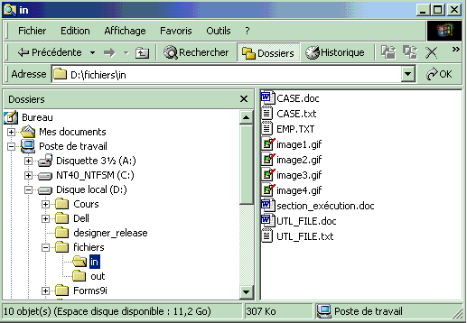

Oracle PL/SQL
Date de publication : Avril 2004 ,
Date de mise a jour : Juillet 2004
9. Le paquetage DBMS_LOB
9.1. Procédures et fonctions du paquetage
9.1.1. Procédures et fonctions des versions 8i et 9i
9.1.2. Procédures de la version 9i
9.1.3. Procédures de la version 10g
9.2. Syntaxe des procédures et fonctions
9.2.1. APPEND
9.2.2. CLOSE
9.2.3. COMPARE
9.2.4. CONVERTTOBLOB
9.2.5. CONVERTTOCLOB
9.2.6. COPY
9.2.7. CREATETEMPORARY
9.2.8. ERASE
9.2.9. FILECLOSE
9.2.10. FILECLOSEALL
9.2.11. FILEEXISTS
9.2.12. FILEGETNAME
9.2.13. FILEISOPEN
9.2.14. FILEOPEN
9.2.15. FREETEMPORARY
9.2.16. GETCHUNKSIZE
9.2.17. GETLENGTH
9.2.18. INSTR
9.2.19. ISOPEN
9.2.20. ISTEMPORARY
9.2.21. LOADFROMFILE
9.2.22. LOADBLOBFROMFILE
9.2.23. LOADCLOBFROMFILE
9.2.24. OPEN
9.2.25. READ
9.2.26. SUBSTR
9.2.27. TRIM
9.2.28. WRITE
9.2.29. WRITEAPPEND
9.3. Exceptions générées par le paquetage
9.4. Exemples
9.5. Manipulations courantes des LOB de type caractères (CLOB)
9. Le paquetage DBMS_LOB
Ce paquetage permet de manipuler les grands objets Oracle (LOB) permanents ou temporaires
Il permet la lecture et l'écriture des grands objets de type
Il permet la lecture des grand objets de type
Une colonne de type BFILE ne stocke qu'un pointeur vers le fichier enregistré au niveau du système d'exploitation
Types utilisés pour la gestion des LOB
- BLOB LOB binaire source ou destination.
- RAW Tampon de type RAW source ou destination (utilisé avec un BLOB)
- CLOB LOB caractères source ou destination (incluant NCLOB)
- VARCHAR2 Tampon de type caractères source ou destination (utilisé avec CLOB et NCLOB)
- INTEGER Specifie la taille d'un tampon ou d'un LOB, le décalage dans un LOB, ou la quantité à lire ou écrire
- BFILE Objet binaire stocké en dehors de la base
constantes utilisées pour la gestion des LOB
8i,9i
- file_readonly CONSTANT BINARY_INTEGER := 0;
- lob_readonly CONSTANT BINARY_INTEGER := 0;
- lob_readwrite CONSTANT BINARY_INTEGER := 1;
- lobmaxsize CONSTANT INTEGER := 4294967295;
- call CONSTANT PLS_INTEGER := 12;
- session CONSTANT PLS_INTEGER := 10;
- warn_inconvertible_char CONSTANT INTEGER := 1;
- default_csid CONSTANT INTEGER := 0;
- default_lang_ctx CONSTANT INTEGER := 0;
- no_warning CONSTANT INTEGER := 0;
10g
- file_readonly CONSTANT BINARY_INTEGER := 0;
- lob_readonly CONSTANT BINARY_INTEGER := 0;
- lob_readwrite CONSTANT BINARY_INTEGER := 1;
- lobmaxsize CONSTANT INTEGER := 18446744073709551615;
- call CONSTANT PLS_INTEGER := 12;
- session CONSTANT PLS_INTEGER := 10;
- warn_inconvertible_char CONSTANT INTEGER := 1;
- default_csid CONSTANT INTEGER := 0;
- default_lang_ctx CONSTANT INTEGER := 0;
- no_warning CONSTANT INTEGER := 0;
En 10g, la taille maximum d'un objet LOB est égale à la valeur du paramètre d'initialisation : db_block_size multiplié par 4294967295.
Cette taille maximum peut donc être comprise entre 8 et 128 teraoctets.
En 9i, la taille maximal d'un objet LOB est de 4 gigaoctets (2**32)
Soit 4294967295 caractères pour un BLOB ou CLOB mono-octet
Ou 4294967295 / 2 = 2147483647 caractères pour un CLOB bi-octets
Les LOBs temporaires sont stockés dans le TABLESPACE temporaire et ne survivent pas à la fin de session.
9.1. Procédures et fonctions du paquetage
9.1.1. Procédures et fonctions des versions 8i et 9i
- Procédure APPEND
- Procédure CLOSE
- Fonction COMPARE
- Procédure COPY
- Procédure CREATETEMPORARY
- Procédure ERASE
- Procédure FILECLOSE
- Procédure FILECLOSEALL
- Fonction FILEEXISTS
- Procédure FILEGETNAME
- Fonction FILEISOPEN
- Procédure FILEOPEN
- Procédure FREETEMPORARY
- Fonction GETCHUNKSIZE
- Fonction GETLENGTH
- Fonction INSTR
- Fonction ISOPEN
- Fonction ISTEMPORARY
- Procédure LOADFROMFILE
- Procédure OPEN
- Procédure READ
- Fonction SUBSTR
- Procédure TRIM
- Procédure WRITE
- Procédure WRITEAPPEND
9.1.2. Procédures de la version 9i
- Procédure LOADBLOBFROMFILE
- Procédure LOADCLOBFROMFILE
9.1.3. Procédures de la version 10g
- Procédure CONVERTTOBLOB
- Procédure CONVERTTOCLOB
9.2. Syntaxe des procédures et fonctions
9.2.1. APPEND
Cette fonction permet d'ajouter le contenu d'un LOB à un autre
DBMS_LOB.APPEND (
dest_lob IN OUT NOCOPY BLOB,
src_lob IN BLOB)
DBMS_LOB.APPEND (
dest_lob IN OUT NOCOPY CLOB CHARACTER SET ANY_CS,
src_lob IN CLOB CHARACTER SET dest_lob%CHARSET)
dest_lob représente le BLOB ou CLOB de destination
src_lob représente le BLOB ou CLOB source
Exceptions générées
VALUE_ERROR Le LOB source ou destination est NULL.
DECLARE
dest_lob BLOB;
src_lob BLOB;
BEGIN
SELECT b_lob INTO dest_lob
FROM lob_table
WHERE key_value = 12 FOR UPDATE;
SELECT b_lob INTO src_lob
FROM lob_table
WHERE key_value = 21;
DBMS_LOB.APPEND(dest_lob, src_lob);
COMMIT;
END;
9.2.2. CLOSE
Ferme un LOB préalablement ouvert
DBMS_LOB.CLOSE (
lob_loc IN OUT NOCOPY BLOB)
DBMS_LOB.CLOSE (
lob_loc IN OUT NOCOPY CLOB CHARACTER SET ANY_CS)
DBMS_LOB.CLOSE (
file_loc IN OUT NOCOPY BFILE)
9.2.3. COMPARE
Comparaison de tout ou partie de 2 LOBs
Les 2 LOBs doivent être de même type
Cette fonction retourne 0 si les deux objets sont identiques, sinon une valeur différente de 0
Elle retourne NULL si
- amount < 1
- amount > LOBMAXSIZE
- déplacement_1 ou déplacement_2 < 1
- déplacement_1 ou déplacement_2 > LOBMAXSIZE
DBMS_LOB.COMPARE (
lob_1 IN BLOB,
lob_2 IN BLOB,
amount IN INTEGER := 4294967295,
déplacement_1 IN INTEGER := 1,
déplacement_2 IN INTEGER := 1)
RETURN INTEGER
DBMS_LOB.COMPARE (
lob_1 IN CLOB CHARACTER SET ANY_CS,
lob_2 IN CLOB CHARACTER SET lob_1%CHARSET,
amount IN INTEGER := 4294967295,
déplacement_1 IN INTEGER := 1,
déplacement_2 IN INTEGER := 1)
RETURN INTEGER
DBMS_LOB.COMPARE (
lob_1 IN BFILE,
lob_2 IN BFILE,
amount IN INTEGER,
déplacement_1 IN INTEGER := 1,
déplacement_2 IN INTEGER := 1)
RETURN INTEGER
lob_1 représente le premier LOB
lob_2 représente le deuxième LOB
amount représente le nombre d'octets (BLOB) ou de caractères (CLOB) à comparer
déplacement_1 représente le décalage en octets ou caractères à partir du début (défaut 1 ) du premier LOB
déplacement_2 représente le décalage en octets ou caractères à partir du début (défaut 1 ) du deuxième LOB
Exceptions générées
UNOPENED_FILE Le fichier n'est pas ouvert
NOEXIST_DIRECTORY le répertoire n'existe pas
NOPRIV_DIRECTORY Privilèges insuffisants sur le répertoire
INVALID_DIRECTORY le répertoire a été invalidé après l'ouverture du fichier
INVALID_OPERATION Fichier inexistant ou privilèges insuffisants
DECLARE
lob_1 BLOB;
lob_2 BLOB;
retval INTEGER;
BEGIN
SELECT b_col INTO lob_1 FROM lob_table
WHERE key_value = 45;
SELECT b_col INTO lob_2 FROM lob_table
WHERE key_value = 54;
retval := dbms_lob.compare(lob_1, lob_2, dbms_lob.lobmaxsize, 1, 1);
IF retval = 0 THEN
dbms_output.put_line( 'LOBs identiques' ) ;
ELSE
dbms_output.put_line( 'LOBs différents' ) ;
END IF;
END;
9.2.4. CONVERTTOBLOB
(10g) Convertion d'une source CLOB ou NCLOB en format binaire BLOB
DBMS_LOB.CONVERTTOBLOB(
dest_lob IN OUT NOCOPY BLOB,
scr_clob IN CLOB CHARACTER SET ANY_CS,
amount IN INTEGER,
dest_offset IN OUT INTEGER,
src_offset IN OUT INTEGER,
blob_csid IN NUMBER,
lang_context IN OUT INTEGER,
warning OUT INTEGER)
dest_lob représente le BLOB de destination
src_clob représente le CLOB ou NCLOB source
amount représente le nombre de caractères à convertir (défaut lobmaxsize)
dest_offset représente le décalage en octets ou caractères à partir du début (défaut 1 ) du BLOB destination
src_offset représente le décalage en octets ou caractères à partir du début (défaut 1 ) du CLOB source
blob_csid ID du jeu de caractères (défaut default_csid ) du BLOB destination
lang_context représente le contexte de language (défaut default_lang_ctx ) du BLOB destination
warning représente le code avertissement retourné par la fonction
Exceptions générées
VALUE_ERROR L'un des paramètres est NULL ou invalide
INVALID_ARGVAL si
- src_offset ou dest_offset < 1.
- src_offset ou dest_offset > LOBMAXSIZE.
- amount < 1.
- amount > LOBMAXSIZE
9.2.5. CONVERTTOCLOB
(10g) Convertion d'une source binaire BLOB en format CLOB
DBMS_LOB.CONVERTTOCLOB(
dest_lob IN OUT NOCOPY CLOB CHARACTER SET ANY_CS,
src_blob IN BLOB,
amount IN INTEGER,
dest_offset IN OUT INTEGER,
src_offset IN OUT INTEGER,
blob_csid IN NUMBER,
lang_context IN OUT INTEGER,
warning OUT INTEGER)
dest_lob représente le CLOB de destination
src_clob représente le BLOB source
amount représente le nombre de caractères à convertir (défaut lobmaxsize)
dest_offset représente le décalage en octets ou caractères à partir du début (défaut 1 ) du BLOB destination
src_offset représente le décalage en octets ou caractères à partir du début (défaut 1 ) du CLOB source
blob_csid ID du jeu de caractères (défaut default_csid ) du BLOB destination
lang_context représente le contexte de language (défaut default_lang_ctx ) du BLOB destination
warning représente le code avertissement retourné par la fonction
Exceptions générées
VALUE_ERROR L'un des paramètres est NULL ou invalide
INVALID_ARGVAL si
- src_offset ou dest_offset < 1.
- src_offset ou dest_offset > LOBMAXSIZE.
- amount < 1.
- amount > LOBMAXSIZE
9.2.6. COPY
Copie de tout ou partie d'un LOB dans un autre
DBMS_LOB.COPY (
dest_lob IN OUT NOCOPY BLOB,
src_lob IN BLOB,
amount IN INTEGER,
dest_déplacement IN INTEGER := 1,
src_déplacement IN INTEGER := 1)
DBMS_LOB.COPY (
dest_lob IN OUT NOCOPY CLOB CHARACTER SET ANY_CS,
src_lob IN CLOB CHARACTER SET dest_lob%CHARSET,
amount IN INTEGER,
dest_déplacement IN INTEGER := 1,
src_déplacement IN INTEGER := 1)
dest_lob représente le LOB destination
src_lob représente le LOB source
amout représente le nombre d'octets (BLOB) ou de caractères (CLOB) que l'on souhaite copier
dest_déplacement représente le déplacement par rapport au début du LOB destination
src_déplacement représente le déplacement par rapport au début du LOB source
Exceptions générées
VALUE_ERROR l'un des paramètres en entrée est NULL ou invalide
INVALID_ARGVAL si:
- src_déplacement ou dest_déplacement < 1
- src_déplacement ou dest_déplacement > LOBMAXSIZE
- amount < 1
- amount > LOBMAXSIZE
DECLARE
lobd BLOB;
lobs BLOB;
dest_déplacement INTEGER := 1
src_déplacement INTEGER := 1
amt INTEGER := 3000;
BEGIN
SELECT b_col INTO lobd
FROM lob_table
WHERE key_value = 12 FOR UPDATE;
SELECT b_col INTO lobs
FROM lob_table
WHERE key_value = 21;
DBMS_LOB.COPY(lobd, lobs, amt, dest_déplacement, src_déplacement);
COMMIT;
END;
9.2.7. CREATETEMPORARY
Création d'un LOB temporaire dans le TABLESPACE temporaire
DBMS_LOB.CREATETEMPORARY (
lob_loc IN OUT NOCOPY BLOB,
cache IN BOOLEAN,
durée IN PLS_INTEGER := 10)
DBMS_LOB.CREATETEMPORARY (
lob_loc IN OUT NOCOPY CLOB CHARACTER SET ANY_CS,
cache IN BOOLEAN,
duree IN PLS_INTEGER := 10)
cache spécifie si le lob doit être lu en cache
durée spécifie le moment ou le LOB est vidé (10 = SESSION (défaut), 12 = CALL)
9.2.8. ERASE
Effacement de tout ou partie d'un LOB
La taille du LOB n'est pas affectée par cette fonction. La partie effacée est en fait remplacée par des CHR(0) pour les BLOB et CHR(32) pour les CLOB
DBMS_LOB.ERASE (
lob_loc IN OUT NOCOPY BLOB,
amount IN OUT NOCOPY INTEGER,
déplacement IN INTEGER := 1)
DBMS_LOB.ERASE (
lob_loc IN OUT NOCOPY CLOB CHARACTER SET ANY_CS,
amount IN OUT NOCOPY INTEGER,
déplacement IN INTEGER := 1)
amout représente le nombre d'octets (BLOB) ou de caractères (CLOB) a effacer
déplacement représente le déplacement par rapport au début du LOB
Exceptions générées
VALUE_ERROR L'un des paramètres est NULL
INVALID_ARGVAL si:
- amount < 1 ou amount > LOBMAXSIZE
- déplacement < 1 ou déplacement > LOBMAXSIZE
DECLARE
lobd BLOB;
amt INTEGER := 3000;
BEGIN
SELECT b_col INTO lobd
FROM lob_table
WHERE key_value = 12 FOR UPDATE;
dbms_lob.erase(dest_lob, amt, 2000);
COMMIT;
END;
9.2.9. FILECLOSE
Fermeture d'un objet BFILE préalablement ouvert
DBMS_LOB.FILECLOSE (
file_loc IN OUT NOCOPY BFILE)
Exceptions générées
VALUE_ERROR Le paramètre en entrée file_loc est NULL
UNOPENED_FILE Le fichier n'était pas ouvert
NOEXIST_DIRECTORY le répertoire n'existe pas
NOPRIV_DIRECTORY Privilèges insuffisants sur le répertoire
INVALID_DIRECTORY le répertoire a été invalidé après l'ouverture du fichier
INVALID_OPERATION Fichier inexistant ou privilèges insuffisants
9.2.10. FILECLOSEALL
Fermeture de tous les objet BFILE préalablement ouvert dans la session
DBMS_LOB.FILECLOSEALL
Exceptions générées
UNOPENED_FILE Aucun fichier ouvert dans la session
9.2.11. FILEEXISTS
Vérifie que le pointeur stocké dans le BFILE correspond à un fichier existant du système de fichiers
Cette fonction retourne 1 si le fichier physique existe, sinon elle retourne 0
DBMS_LOB.FILEEXISTS (
file_loc IN BFILE)
RETURN INTEGER
Exceptions générées
NOEXIST_DIRECTORY le répertoire n'existe pas
NOPRIV_DIRECTORY Privilèges insuffisants sur le répertoire
INVALID_DIRECTORY le répertoire a été invalidé après l'ouverture du fichier
DECLARE
fil BFILE;
BEGIN
SELECT f_lob INTO fil FROM lob_table WHERE key_value = 12;
IF (dbms_lob.fileexists(fil)) THEN
dbms_output.put_line( 'fichier existant' ) ;
ELSE
dbms_output.put_line( 'fichier inexistant' ) ;
END IF;
END;
9.2.12. FILEGETNAME
Retourne le répertoire et le nom de fichier pointé par l'objet BFILE
En aucun cas elle ne teste l'existence physique du fichier
DBMS_LOB.FILEGETNAME (
file_loc IN BFILE,
repertoire OUT VARCHAR2,
fichier OUT VARCHAR2)
repertoire indique le répertoire Oracle
fichier indique le nom du fichier
Exceptions générées
VALUE_ERROR L'un des paramètres en entrée est NULL ou invalide
INVALID_ARGVAL Le paramètre repertoire ou fichier est NULL
Voir l'exemple 3 en fin de chapitre
9.2.13. FILEISOPEN
Vérifie si le BFILE a été ouvert
Cette fonction retourne 1 si le fichier est ouvert, sinon elle retourne 0
DBMS_LOB.FILEISOPEN (
file_loc IN BFILE)
RETURN INTEGER
Exceptions gérées
NOEXIST_DIRECTORY le répertoire n'existe pas
NOPRIV_DIRECTORY Privilèges insuffisants sur la Directory
INVALID_DIRECTORY le répertoire a été invalidé après l'ouverture du fichier
DECLARE
fil BFILE;
pos INTEGER;
pattern VARCHAR2(20);
BEGIN
SELECT f_lob INTO fil FROM lob_table
WHERE key_value = 12;
...
IF (dbms_lob.fileisopen(fil)) THEN
dbms_output.put_line( 'fichier ouvert' ) ;
dbms_lob.fileclose(fil);
ELSE
dbms_output.put_line( 'fichier non ouvert' ) ;
END IF;
END;
9.2.14. FILEOPEN
Ouverture d'un BFILE en lecture seule
DBMS_LOB.FILEOPEN (
file_loc IN OUT NOCOPY BFILE,
open_mode IN BINARY_INTEGER := file_readonly)
Exceptions générées
VALUE_ERROR Le paramètre file_loc ou open_mode est NULL
INVALID_ARGVAL open_mode différent de FILE_READONLY
OPEN_TOOMANY Trop de fichiers ouverts dans la session
NOEXIST_DIRECTORY le répertoire n'existe pas
INVALID_DIRECTORY le répertoire a été invalidé après l'ouverture du fichier
INVALID_OPERATION Fichier inexistant ou privilèges insuffisants
Voir les exemples 1 et 2 en fin de chapitre
9.2.15. FREETEMPORARY
Libération d'un BLOB ou CLOB du TABLESPACE temporaire
DBMS_LOB.FREETEMPORARY (
lob_loc IN OUT NOCOPY BLOB)
DBMS_LOB.FREETEMPORARY (
lob_loc IN OUT NOCOPY CLOB CHARACTER SET ANY_CS)
Voir l'exemple 2 en fin de chapitre
9.2.16. GETCHUNKSIZE
Retourne la place utilisée dans le chunk pour stocker le LOB
Lorsqu'une table contenant une colonne LOB est créée, l'on peut indiquer le facteur de "chunking" qui doit être un multiple d'un bloc Oracle
Cet espace (chunk) est utilisé pour accéder ou modifier la valeur du LOB. Une partie de cet espace est réservé au système, l'autre au stockage de la valeur
La valeur retournée pour un BLOB est exprimée en octets, et en caractères pour un CLOB
DBMS_LOB.GETCHUNKSIZE (
lob_loc IN BLOB)
RETURN INTEGER
DBMS_LOB.GETCHUNKSIZE (
lob_loc IN CLOB CHARACTER SET ANY_CS)
RETURN INTEGER
9.2.17. GETLENGTH
Retourne la longueur en octets d'un BLOB et en caractères d'un CLOB et la taille du fichier physique pour un BFILE
La valeur retournée est NULL si le LOB est NULL ou si le lob_loc est NULL
DBMS_LOB.GETLENGTH (
lob_loc IN BLOB)
RETURN INTEGER
DBMS_LOB.GETLENGTH (
lob_loc IN CLOB CHARACTER SET ANY_CS)
RETURN INTEGER
DBMS_LOB.GETLENGTH (
file_loc IN BFILE)
RETURN INTEGER
DECLARE
lobd BLOB;
length INTEGER;
BEGIN
SELECT b_lob INTO lobd FROM lob_table
WHERE key_value = 42;
length := dbms_lob.getlength(lobd);
IF length IS NULL THEN
dbms_output.put_line('LOB NULL');
ELSE
dbms_output.put_line('Taile du LOB : ' || length);
END IF;
END;
9.2.18. INSTR
Indication de la position d'un caractère ou d'une chaîne dans un LOB
DBMS_LOB.INSTR (
lob_loc IN BLOB,
pattern IN RAW,
déplacement IN INTEGER := 1,
nth IN INTEGER := 1)
RETURN INTEGER
DBMS_LOB.INSTR (
lob_loc IN CLOB CHARACTER SET ANY_CS,
pattern IN VARCHAR2 CHARACTER SET lob_loc%CHARSET,
déplacement IN INTEGER := 1,
nth IN INTEGER := 1)
RETURN INTEGER
DBMS_LOB.INSTR (
file_loc IN BFILE,
pattern IN RAW,
déplacement IN INTEGER := 1,
nth IN INTEGER := 1)
RETURN INTEGER
pattern représente une variable de type RAW pour les BLOB et BFILE ou une variable de type VARCHAR2 pour les CLOB
déplacement représente l'octet de départ (BLOB) ou le caractère de départ (CLOB) de la recherche (défaut 1)
nth représente le numéro d'occurrence à rechercher (défaut 1)
Cette fonction retourne la position du premier octet ou caractère recherché, ou retourne la valeur 0 si pattern n'est pas trouvé
Elle retourne NULL pour les conditions suivantes :
- Un ou plusieurs paramètres en entrée sont NULL ou invalides
- déplacement < 1 ou déplacement > LOBMAXSIZE
- nth < 1
- nth > LOBMAXSIZE
Exceptions générées
UNOPENED_FILE Fichier non ouvert
NOEXIST_DIRECTORY le répertoire n'existe pas
NOPRIV_DIRECTORY Privilèges insuffisants sur le répertoire
INVALID_DIRECTORY le répertoire a été invalidé après l'ouverture du fichier
INVALID_OPERATION Fichier inexistant ou privilèges insuffisants
DECLARE
lobd CLOB;
pattern VARCHAR2 := 'abcde';
position INTEGER := 10000;
BEGIN
SELECT b_col INTO lobd
FROM lob_table
WHERE key_value = 21;
position := DBMS_LOB.INSTR(lobd,pattern, 1, 1);
IF position = 0 THEN
dbms_output.put_line('Pattern non trouvée');
ELSE
dbms_output.put_line('Pattern trouvée en position ' || position);
END IF;
END;
9.2.19. ISOPEN
Vérification de l'état d'ouverture d'un LOB
Cette fonction retourne la valeur TRUE si le LOB est temporaire, sinon elle retourne la valeur FALSE
DBMS_LOB.ISOPEN (
lob_loc IN BLOB)
RETURN INTEGER
DBMS_LOB.ISOPEN (
lob_loc IN CLOB CHARACTER SET ANY_CS)
RETURN INTEGER
DBMS_LOB.ISOPEN (
file_loc IN BFILE)
9.2.20. ISTEMPORARY
Vérifie si le LOB est temporaire
DBMS_LOB.ISTEMPORARY (
lob_loc IN BLOB)
RETURN INTEGER
DBMS_LOB.ISTEMPORARY (
lob_loc IN CLOB CHARACTER SET ANY_CS)
RETURN INTEGER
9.2.21. LOADFROMFILE
Copie de tout ou partie d'un fichier externe dans un LOB
DBMS_LOB.LOADFROMFILE (
dest_lob IN OUT NOCOPY BLOB,
src_file IN BFILE,
amount IN INTEGER,
dest_déplacement IN INTEGER := 1,
src_déplacement IN INTEGER := 1)
dest_lob représente le LOB de destination
src_file représente le BFILE source
amount représente le nombre d'octets à lire
dest_déplacement représente le décalage d'écriture dans le LOB destinataire (défaut 1)
src_déplacement représente le décalage de lecture depuis le fichier externe (défaut 1)
Exceptions générées
VALUE_ERROR L'un des paramètres en entré est NULL ou invalide
INVALID_ARGVAL si:
- src_déplacement ou dest_déplacement < 1
- src_déplacement ou dest_déplacement > LOBMAXSIZE
- amount < 1
- amount > LOBMAXSIZE
DECLARE
lobd BLOB;
fils BFILE := BFILENAME('SOME_DIR_OBJ','some_file');
amt INTEGER := 4000;
BEGIN
SELECT b_lob INTO lobd FROM lob_table WHERE key_value = 42 FOR UPDATE;
dbms_lob.fileopen(fils, dbms_lob.file_readonly);
dbms_lob.loadfromfile(lobd, fils, amt);
COMMIT;
dbms_lob.fileclose(fils);
END;
9.2.22. LOADBLOBFROMFILE
Copie de tout ou partie d'un fichier externe dans un BLOB
DBMS_LOB.LOADBLOBFROMFILE (
dest_lob IN OUT NOCOPY BLOB,
src_bfile IN BFILE,
amount IN INTEGER,
dest_déplacement IN OUT INTEGER,
src_déplacement IN OUT INTEGER)
les valeurs pour amount, dest_déplacement et src_déplacement sont exprimées en octets
Voir les exemples 1 et 2 en fin de chapitre
9.2.23. LOADCLOBFROMFILE
Copie de tout ou partie d'un fichier externe dans un CLOB
DBMS_LOB.LOADCLOBFROMFILE (
dest_lob IN OUT NOCOPY BLOB,
src_bfile IN BFILE,
amount IN INTEGER,
dest_déplacement IN OUT INTEGER,
src_déplacement IN OUT INTEGER,
src_csid IN NUMBER,
lang_context IN OUT INTEGER,
warning OUT INTEGER)
les valeurs pour amount et src_déplacement sont exprimées en octets
dest_déplacement représente le décalage en caractères d'écriture dans le CLOB
src_déplacement représente le décalage en octets de lecture depuis le fichier externe
src_csid représente le jeu de caractères du fichier externe
lang_context représente le code de la langue
warning représente l'éventuel code d'erreur
Exceptions générées
VALUE_ERROR L'un des paramètres en entrée est NULL ou invalide
INVALID_ARGVAL si:
- src_déplacement ou dest_déplacement < 1
- src_déplacement ou dest_déplacement > LOBMAXSIZE
- amount < 1
- amount > LOBMAXSIZE
Voir les exemples 1 et 2 en fin de chapitre
9.2.24. OPEN
Ouverture d'un LOB
DBMS_LOB.OPEN (
lob_loc IN OUT NOCOPY BLOB,
mode IN BINARY_INTEGER);
DBMS_LOB.OPEN (
lob_loc IN OUT NOCOPY CLOB CHARACTER SET ANY_CS,
mode IN BINARY_INTEGER);
DBMS_LOB.OPEN (
file_loc IN OUT NOCOPY BFILE,
mode IN BINARY_INTEGER := file_readonly);
mode représente l'une des valeurs suivantes
- file_readonly
- lob_readonly
- lob_readwrite
9.2.25. READ
Lecture de tout ou partie d'un LOB
DBMS_LOB.READ (
lob_loc IN BLOB,
amount IN OUT NOCOPY BINARY_INTEGER,
déplacement IN INTEGER,
tampon OUT RAW)
DBMS_LOB.READ (
lob_loc IN CLOB CHARACTER SET ANY_CS,
amount IN OUT NOCOPY BINARY_INTEGER,
déplacement IN INTEGER,
tampon OUT VARCHAR2 CHARACTER SET lob_loc%CHARSET)
DBMS_LOB.READ (
file_loc IN BFILE,
amount IN OUT NOCOPY BINARY_INTEGER,
déplacement IN INTEGER,
tampon OUT RAW)
amount représente le nombre d'octets (BLOB) ou de caractère (CLOB) à lire
déplacement représente le décalage en octets (BLOB) ou en caractères (CLOB)
tampon reçoit les octets (BLOB) ou caractères (CLOB) lus
Exceptions générées
VALUE_ERROR Le ou les paramètres lob_loc, amount, ou déplacement sont NULL
INVALID_ARGVAL si:
- amount < 1
- amount > MAXBUFSIZE
- déplacement < 1
- déplacement > LOBMAXSIZE
- amount supérieur, en octets ou caractères, à la capacité du tampon
NO_DATA_FOUND Détection de fin de LOB
Exceptions générées pour BFILE
UNOPENED_FILE Fichier non ouvert
NOEXIST_DIRECTORY le répertoire n'existe pas
NOPRIV_DIRECTORY Privilèges insuffisants sur le répertoire
INVALID_DIRECTORY le répertoire a été invalidé après l'ouverture du fichier
INVALID_OPERATION Fichier inexistant ou privilèges insuffisants
DECLARE
src_lob BLOB;
buffer RAW(32767);
amt BINARY_INTEGER := 32767;
pos INTEGER := 2147483647;
BEGIN
SELECT b_col INTO src_lob
FROM lob_table
WHERE key_value = 21;
LOOP
dbms_lob.read (src_lob, amt, pos, buffer);
pos := pos + amt;
END LOOP;
EXCEPTION
WHEN NO_DATA_FOUND THEN
dbms_output.put_line('Fin des données');
END;
9.2.26. SUBSTR
Extraction d'une partie d'un LOB
DBMS_LOB.SUBSTR (
lob_loc IN BLOB,
amount IN INTEGER := 32767,
déplacement IN INTEGER := 1)
RETURN RAW
DBMS_LOB.SUBSTR (
lob_loc IN CLOB CHARACTER SET ANY_CS,
amount IN INTEGER := 32767,
déplacement IN INTEGER := 1)
RETURN VARCHAR2 CHARACTER SET lob_loc%CHARSET
DBMS_LOB.SUBSTR (
file_loc IN BFILE,
amount IN INTEGER := 32767,
déplacement IN INTEGER := 1)
RETURN RAW
amount représente le nombre d'octets (BLOB) ou de caractères (CLOB) à lire
déplacement représente le décalage en octets (BLOB) ou en caractères (CLOB) depuis le début du LOB
Les valeurs retournées sont
RAW pour les BLOB ou BFILE
VARCHAR2 pour les CLOB
NULL si:
- Un paramètre en entrée est NULL
- amount < 1
- amount > 32767
- déplacement < 1
- déplacement > LOBMAXSIZE
Exceptions générées
UNOPENED_FILE Fichier non ouvert
NOEXIST_DIRECTORY le répertoire n'existe pas
NOPRIV_DIRECTORY Privilèges insuffisants sur le répertoire
INVALID_DIRECTORY le répertoire a été invalidé après l'ouverture du fichier
INVALID_OPERATION Fichier inexistant ou privilèges insuffisants
DECLARE
src_lob CLOB;
pos INTEGER := 2147483647;
buf VARCHAR2(32000);
BEGIN
SELECT c_lob INTO src_lob FROM lob_table
WHERE key_value = 21;
buf := DBMS_LOB.SUBSTR(src_lob, 32767, pos);
END;
9.2.27. TRIM
Réduction de la taille d'un LOB
DBMS_LOB.TRIM (
lob_loc IN OUT NOCOPY BLOB,
newlen IN INTEGER)
DBMS_LOB.TRIM (
lob_loc IN OUT NOCOPY CLOB CHARACTER SET ANY_CS,
newlen IN INTEGER)
newlen représente la taille finale désirée exprimée en octets (BLOB) ou en caractères (CLOB)
Exceptions générées
VALUE_ERROR Le paramètre lob_loc est NULL
INVALID_ARGVAL si:
- new_len < 0
- new_len > LOBMAXSIZE
DECLARE
lob_loc BLOB;
BEGIN
SELECT b_col INTO lob_loc
FROM lob_table
WHERE key_value = 42 FOR UPDATE;
dbms_lob.trim(lob_loc, 4000);
COMMIT;
END;
9.2.28. WRITE
Ecriture dans un LOB
DBMS_LOB.WRITE (
lob_loc IN OUT NOCOPY BLOB,
amount IN BINARY_INTEGER,
déplacement IN INTEGER,
tampon IN RAW)
DBMS_LOB.WRITE (
lob_loc IN OUT NOCOPY CLOB CHARACTER SET ANY_CS,
amount IN BINARY_INTEGER,
déplacement IN INTEGER,
tampon IN VARCHAR2 CHARACTER SET lob_loc%CHARSET)
amount représente le nombre d'octets (BLOB) ou de caractères (CLOB) à écrire
déplacement représente le décalage en octets (BLOB) ou en caractères (CLOB) depuis le début du LOB
tampon représente la variable contenant les données à écrire
Exceptions générées
VALUE_ERROR L'un des paramètres en entrée lob_loc, amount, ou déplacement sont NULL, hors plage, ou invalides
INVALID_ARGVAL si:
- amount < 1
- amount > MAXBUFSIZE
- déplacement < 1
- déplacement > LOBMAXSIZE
DECLARE
lob_loc BLOB;
buffer RAW;
amt BINARY_INTEGER := 32767;
pos INTEGER := 2147483647;
i INTEGER;
BEGIN
SELECT b_col INTO lob_loc
FROM lob_table
WHERE key_value = 12 FOR UPDATE;
FOR i IN 1..3 LOOP
dbms_lob.write (lob_loc, amt, pos, buffer);
pos := pos + amt;
END LOOP;
END;
9.2.29. WRITEAPPEND
Ajout de données à la fin d'un LOB
DBMS_LOB.WRITEAPPEND (
lob_loc IN OUT NOCOPY BLOB,
amount IN BINARY_INTEGER,
tampon IN RAW)
DBMS_LOB.WRITEAPPEND (
lob_loc IN OUT NOCOPY CLOB CHARACTER SET ANY_CS,
amount IN BINARY_INTEGER,
tampon IN VARCHAR2 CHARACTER SET lob_loc%CHARSET)
amount représente le nombre d'octets (BLOB) ou de caractères (CLOB) à écrire
tampon représente la variable contenant les données à écrire
Exceptions générés
VALUE_ERROR L'un des paramètres en entrée lob_loc, amount, ou déplacement sont NULL, hors plage, ou invalides
INVALID_ARGVAL si:
- amount < 1
- amount > MAXBUFSIZE
DECLARE
lob_loc BLOB;
buffer RAW;
amt BINARY_INTEGER := 32767;
i INTEGER;
BEGIN
SELECT b_col INTO lob_loc
FROM lob_table
WHERE key_value = 12 FOR UPDATE;
FOR i IN 1..3 LOOP
dbms_lob.writeappend (lob_loc, amt, buffer);
END LOOP;
END;
9.3. Exceptions générées par le paquetage
- invalid_argval 21560 Argument NULL invalide ou hors plage d'utilisation
- access_error 22925 Tentative d'écriture de trop de données dans le LOB. La taille maxi est limitée à 4 gigabytes
- noexist_directory 22285 Le répertoire désigné n'existe pas
- nopriv_directory 22286 Privilèges insuffisants sur le répertoire ou sur le fichier
- invalid_directory 22287 Le répertoire spécifié n'est pas valide ou a été modifiée par le DBA en cours d'utilisation
- operation_failed 22288 L'opération demandée sur le fichier a échoué
- unopened_file 22289 Tentative d'opération sur un fichier non ouvert
- open_toomany 22290 Le nombre maximum de fichiers ouverts est atteint
9.4. Exemples
Voici une procédure permettant de charger en table diverses colonnes LOB
Description de la table
CREATE TABLE DOCUMENT (
ID NUMBER (5) PRIMARY KEY,
TYP VARCHAR2 (20),
UTILISE VARCHAR2 (30),
LOB_TEXTE CLOB,
LOB_DATA BLOB,
LOB_FICHIER BFILE,
NOM_DOC VARCHAR2 (100))
La colonne ID stocke le numéro unique du document
La colonne TYP stocke le type du document
La colonne UTILISE stocke l'utilisateur qui modifie le document
La colonne LOB_TEXTE stocke un texte long
La colonne LOB_DATA stocke une image
La colonne LOB_FICHIER stocke un pointeur vers le fichier natif externe
Ainsi que les fichiers externes suivants

La procédure Insert_document() permet d'insérer une ligne dans la table et d'alimenter les colonnes LOB
SQL> CREATE OR REPLACE PROCEDURE Insert_document
2 (
3 PC$Type IN DOCUMENT.TYP%TYPE
4 ,PC$Nom IN DOCUMENT.NOM_DOC%TYPE
5 ,PC$Texte IN VARCHAR2
6 ,PC$Image IN VARCHAR2
7 ,PC$Fichier IN VARCHAR2
8 ) IS
9 L$Blob BLOB;
10 L$Clob CLOB;
11 L$Bfile BFILE;
12 LN$Len NUMBER := dbms_lob.lobmaxsize;
13 LN$Num NUMBER ;
14 LN$src_off PLS_INTEGER := 1 ;
15 LN$dst_off PLS_INTEGER := 1 ;
16 LN$Langctx NUMBER := dbms_lob.default_lang_ctx ;
17 LN$Warn NUMBER;
18 BEGIN
19
20 If PC$Fichier is not null Then
21 L$Bfile := BFILENAME( 'FICHIERS_IN', PC$Fichier );
22 End if ;
23 Select SEQ_DOCUMENT.NEXTVAL Into LN$Num From DUAL ;
24 Insert into DOCUMENT (ID, NOM_DOC, TYP, UTILISE, LOB_TEXTE, LOB_DATA, LOB_FICHIER)
25 Values( LN$Num, PC$Nom, PC$Type, NULL, EMPTY_CLOB(), EMPTY_BLOB(), L$Bfile ) ;
26 Select
27 LOB_TEXTE
28 ,LOB_DATA
29 Into
30 L$Clob
31 ,L$Blob
32 From
33 DOCUMENT
34 Where
35 ID = LN$Num
36 ;
37
38 If PC$Texte is not null Then
39 L$Bfile := BFILENAME( 'FICHIERS_IN', PC$Texte );
40 dbms_lob.fileopen(L$Bfile, dbms_lob.file_readonly);
41 If dbms_lob.fileexists( L$Bfile ) = 1 Then
42 dbms_output.put_line(PC$Texte || ' ouvert' ) ;
43 dbms_lob.loadclobfromfile(
44 L$Clob,
45 L$Bfile,
46 LN$Len,
47 LN$src_off,
48 LN$dst_off,
49 dbms_lob.default_csid,
50 LN$Langctx,
51 LN$Warn);
52 dbms_lob.fileclose(L$Bfile);
53 Else
54 raise_application_error( -20100, 'Erreur ouverture ' || PC$Texte ) ;
55 End if ;
56 End if ;
57
58
59 If PC$Image is not null Then
60 L$Bfile := BFILENAME( 'FICHIERS_IN', PC$Image );
61 dbms_lob.fileopen(L$Bfile, dbms_lob.file_readonly);
62 dbms_lob.loadblobfromfile(
63 L$Blob,
64 L$Bfile,
65 LN$Len,
66 LN$src_off,
67 LN$dst_off);
68 dbms_lob.fileclose(L$Bfile);
69 End if ;
70
71
72 Update DOCUMENT
73 Set
74 LOB_TEXTE = L$Clob
75 ,LOB_DATA = L$Blob
76 Where
77 ID = LN$Num ;
78
79 END;
80 /
Procédure créée.
SQL>
Insérons une ligne dans la table
SQL> execute Insert_document( 'Word','Document : CASE','CASE.txt','image1.gif','CASE.doc' ) ;
CASE.txt ouvert
Procédure PL/SQL terminée avec succès.
SQL> Select ID, NOM_DOC, TYP, LOB_TEXTE From DOCUMENT ;
ID NOM_DOC TYP
LOB_TEXTE
6 Document : CASE Word
CASE
Cette instruction permet de mettre en place des structures de test condi
Dans cet exemple, nous initialisons les variables LOB par un select en table, qui implique que l'enregistrement existe, d'où l'instruction d'insertion en début de procédure
Nous pourrions tout aussi bien n'effectuer l'insertion en table qu'en fin de chargement des colonnes LOB
Dans ce cas, les variables LOB doivent avoir été préalablement initialisées avec la fonction CREATETEMPORARY comme dans l'exemple suivant
SQL> CREATE OR REPLACE PROCEDURE Insert_document2
2 (
3 PC$Type IN DOCUMENT.TYP%TYPE
4 ,PC$Nom IN DOCUMENT.NOM_DOC%TYPE
5 ,PC$Texte IN VARCHAR2
6 ,PC$Image IN VARCHAR2
7 ,PC$Fichier IN VARCHAR2
8 ) IS
9 L$Blob BLOB;
10 L$Clob CLOB;
11 L$Bfile BFILE;
12 LN$Len NUMBER := dbms_lob.lobmaxsize;
13 LN$Num NUMBER ;
14 LN$src_off PLS_INTEGER := 1 ;
15 LN$dst_off PLS_INTEGER := 1 ;
16 LN$Langctx NUMBER := dbms_lob.default_lang_ctx ;
17 LN$Warn NUMBER;
18 BEGIN
19
20 If PC$Fichier is not null Then
21 L$Bfile := BFILENAME( 'FICHIERS_IN', PC$Fichier );
22 End if ;
23
24 dbms_lob.createtemporary( L$Clob, TRUE ) ;
25 dbms_lob.createtemporary( L$Blob, TRUE ) ;
26
27
28 If PC$Texte is not null Then
29 L$Bfile := BFILENAME( 'FICHIERS_IN', PC$Texte );
30 dbms_lob.fileopen(L$Bfile, dbms_lob.file_readonly);
31 If dbms_lob.fileexists( L$Bfile ) = 1 Then
32 dbms_output.put_line(PC$Texte || ' ouvert' ) ;
33 dbms_lob.loadclobfromfile(
34 L$Clob,
35 L$Bfile,
36 LN$Len,
37 LN$src_off,
38 LN$dst_off,
39 dbms_lob.default_csid,
40 LN$Langctx,
41 LN$Warn);
42 dbms_lob.fileclose(L$Bfile);
43 Else
44 raise_application_error( -20100, 'Erreur ouverture ' || PC$Texte ) ;
45 End if ;
46 End if ;
47
48
49 If PC$Image is not null Then
50 L$Bfile := BFILENAME( 'FICHIERS_IN', PC$Image );
51 dbms_lob.fileopen(L$Bfile, dbms_lob.file_readonly);
52 dbms_lob.loadblobfromfile(
53 L$Blob,
54 L$Bfile,
55 LN$Len,
56 LN$src_off,
57 LN$dst_off);
58 dbms_lob.fileclose(L$Bfile);
59 End if ;
60
61
62 Insert into DOCUMENT (ID, NOM_DOC, TYP, UTILISE, LOB_TEXTE, LOB_DATA, LOB_FICHIER)
63 Values( SEQ_DOCUMENT.NEXTVAL, PC$Nom, PC$Type, NULL, L$Clob, L$Blob, L$Bfile ) ;
64
65 dbms_lob.freetemporary( L$Clob ) ;
66 dbms_lob.freetemporary( L$Blob ) ;
67
68 END;
69 /
Procédure créée.
SQL>
Utilisation de la procédure FILEGETNAME pour afficher la directorie et le nom du fichier pointés par la colonne BFILE
SQL> CREATE OR REPLACE PROCEDURE Affiche_Infos_Fichier
2 (
3 PN$Id IN DOCUMENT.ID%TYPE
4 )
5 Is
6 LC$Rep VARCHAR(100);
7 LC$Fic VARCHAR2(100) ;
8 L$Bfile BFILE;
9 Begin
10 Select LOB_FICHIER
11 Into L$Bfile
12 From DOCUMENT
13 Where ID = PN$Id
14 ;
15
16 DBMS_LOB.FILEGETNAME (L$Bfile, LC$Rep, LC$Fic) ;
17 Dbms_output.put_line( 'Dir=' || LC$Rep || ' Fic=' || LC$Fic ) ;
18 End ;
19 /
Procédure créée.
SQL> set serveroutput on
SQL> select ID from DOCUMENT ;
ID
6
SQL> execute Affiche_Infos_Fichier( 6 ) ;
Dir=FICHIERS_IN Fic=CASE.doc
Procédure PL/SQL terminée avec succès.
9.5. Manipulations courantes des LOB de type caractères (CLOB)
La plupart des manipulations courantes sur les objets CLOB peuvent être effectuées avec les fonctions SQL
LENGTH
SQL> select length(lob_texte), length(lob_data) from document;
LENGTH(LOB_TEXTE) LENGTH(LOB_DATA)
3131 8748
SUBSTR
SQL> select substr(lob_texte,2000, 100) from document;
SUBSTR(LOB_TEXTE,2000,100)
/SQL terminée avec succès.
Cette fois l'opérateur est précisé sur chaque lign
INSTR
SQL> select instr(lob_texte, 'opérateur') from document;
INSTR(LOB_TEXTE,'OPÉRATEUR')
256
UPPER
SQL> select upper( substr( lob_texte, 1, 40 ) ) from document;
UPPER(SUBSTR(LOB_TEXTE,1,40))
CASE
CETTE INSTRUCTION PERMET DE METT
LIKE
SQL> select id, nom_doc from document where lob_texte like '%opérateur%';
ID NOM_DOC
6 Document : CASE
Copyright ©2004 SheikYerbouti.
Aucune reproduction, même partielle, ne peut être faite
de ce site et de l'ensemble de son contenu : textes, documents, images, etc
sans l'autorisation expresse de l'auteur. Sinon vous encourez selon la loi jusqu'à 3 ans de prison et jusqu'à 300 000 E
de dommages et intérets. Cette page est déposée à la SACD.
|